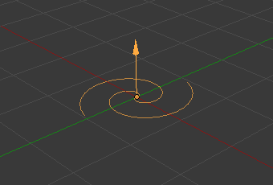

简介¶
Force Fields提供了一种为动态系统添加额外动作的方法。 粒子, 软体, 刚体 </physics/rigid_body/index>, 和 布料物体 都可能受到 力场 的影响。强制字段自动影响所有内容 要从其影响中删除模拟或粒子系统，只需在“场权重”面板中减小该类型的力场的影响。
- 所有类型的物体和粒子都可以生成力场，但只有曲线物体可以承受 曲线指令 力场。
- 力场也可以从粒子生成。 请参阅 Particle Physics
- 对象需要共享至少一个公共层才能生效。
您可以将粒子的影响限制在一组对象上（请参阅 Particle Physics 页面).

|

|

|

|
创建力场¶
参考
模式: 物体模式
面板:
要创建单个力场，可以选择 并选择所需的力场。此方法创建一个空的，附加的力场。
要从现有对象创建一个字段，您必须选择该对象并切换到 物理 选项卡。在 力场 菜单中选择字段类型。
这些领域有许多共同的选择，这些常见的选项将为 球形 字段进行说明。
Note
更改 力场 面板或偏转 碰撞 面板设置后，必须通过 清除烘培 重新计算粒子，软体或布系统，这不是自动完成的。您可以使用 Ctrl-B 来清除所有选定对象的缓存。
粒子对各种 力场 ，软体只对 球面 ， 风 ， 涡流 （他们在谐振场反应，但不是有用的方式）反应。
常用力场的设置¶
大多数力场具有相同的设置，尽管它们的行为截然不同。下面介绍场类型唯一的设置。曲线指南和纹理字段有非常不同的选择。
- 外形
该内容有：
- 点
- 指向全方位影响。
- 平面
- XY平面中的常数仅在Z方向上变化。
- 面
- ToDo.
- 每个点
- ToDo.
- 强度/力度
- 实力的场效应。这可以是正的或负的，以改变力的作用方向。力场的强度用力对象的尺度缩放，允许您放大和缩小场景，保持相同的效果。
- 流
- 将效应器力场转化为空气流速。
- 噪波
- 增加噪音强度的力量。
- 随机种
- 改变随机噪声的种子。
- 效果片段
- 您可以切换力场对粒子位置和旋转的影响。
- 碰撞吸收
- 力被碰撞物体吸收。
衰减¶
在这里，您可以指定力场的形状（如果脱落功率大于0）。
- 衰减类型
- 球形
- 衰减在全方位统一，就像一个球体一样。
- 管形
- 脱落导致管状力场。场的径向衰减可以调整，以及场的 最小 和 最大 距离。
- 锥形
- 掉落会导致锥形的力场。附加选项与 管形 选项相同。
- Z向
- 下降可以设置为仅在正Z轴，负Z轴或两者的方向上应用。
- 能量
- 力场的力量与力场的距离如何变化。如果r是距物体中心的距离，则力以1 / r的功率变化。甲脱落的2改变力场与1 / [R 2，其是引力的衰减。
- 最大值
- 使力场仅在指定的最大半径内生效（由对象周围的附加圆圈显示）。
- 最小值
- 距离物体中心的距离，直到力场的强度全部有效。如果您的退出 0，此参数什么都不做，因为该字段是有效的全强度到最大距离（或无限远）。由物体周围的一个附加圆圈显示。